Do rascunho à cicatrização, a Pessôa Tattoo cuida de cada etapa do seu projeto.
Atendimento Exclusivo via WhatsApp
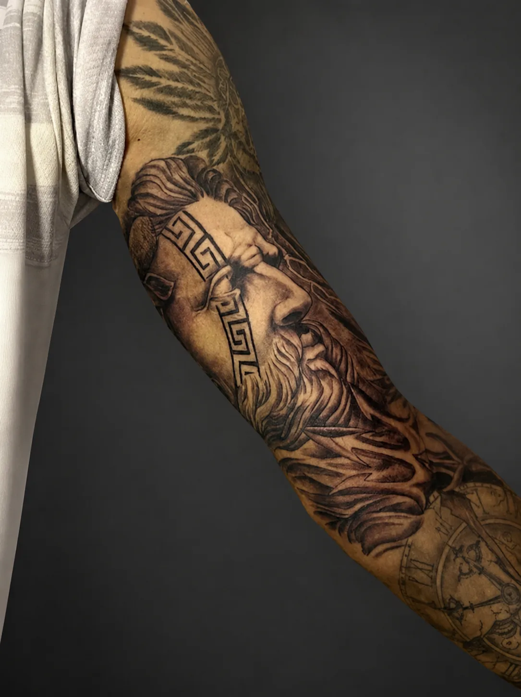
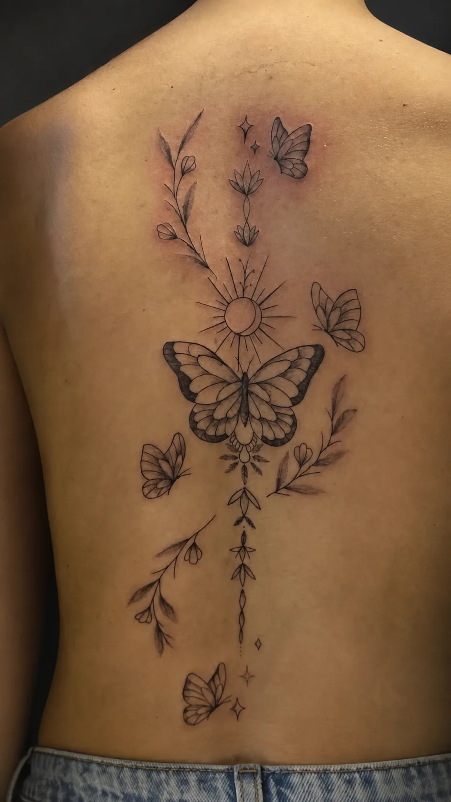
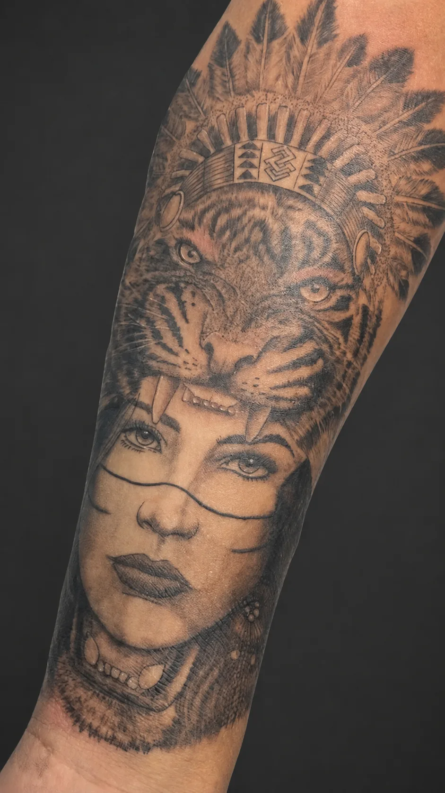
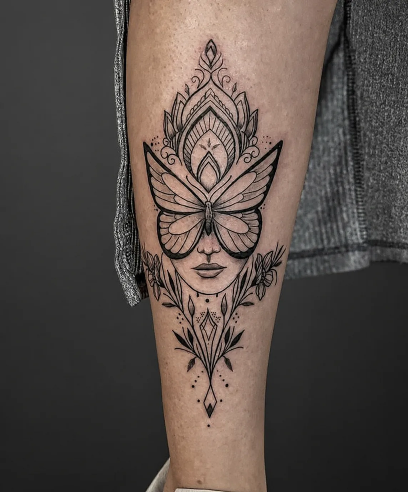
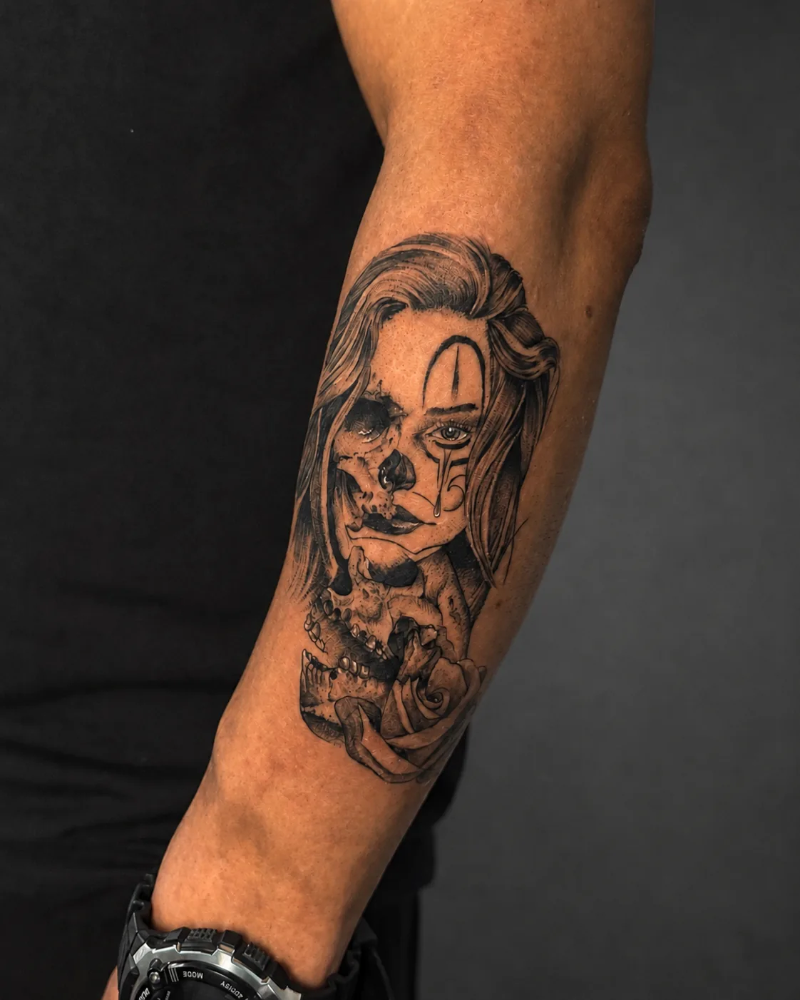
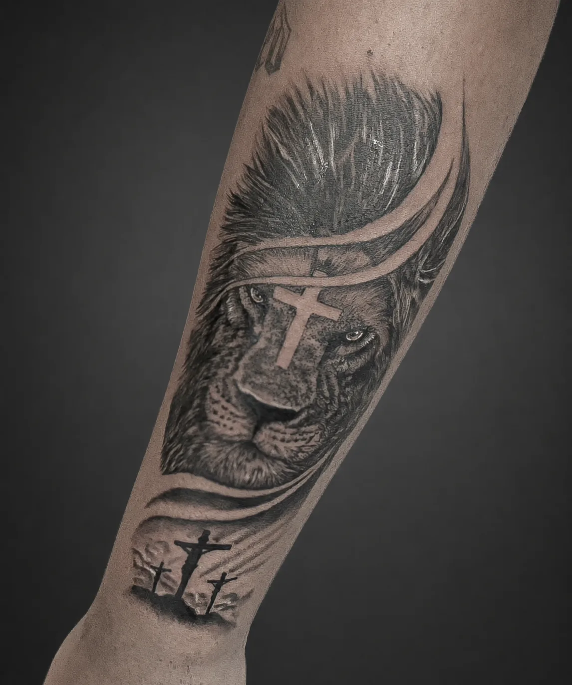
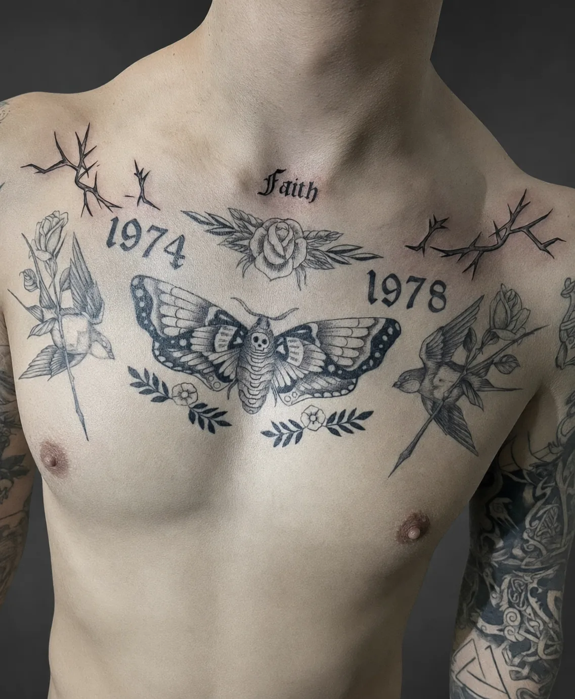
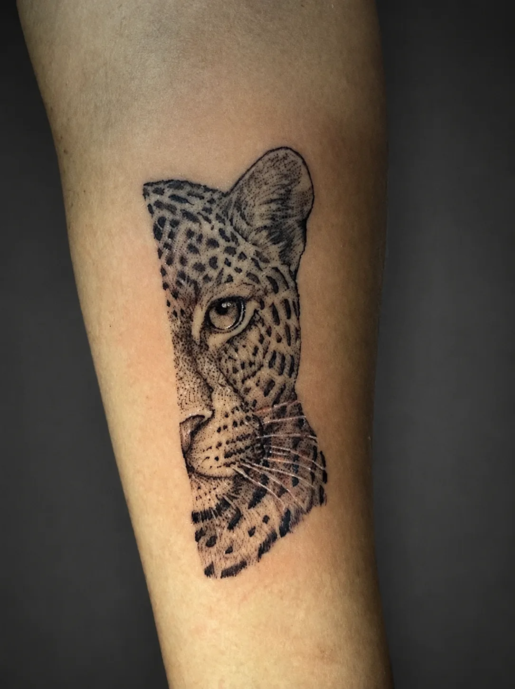
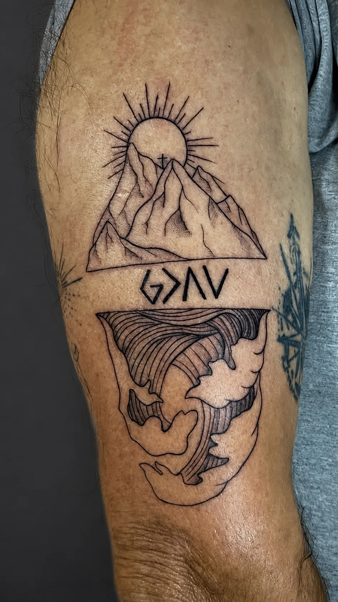
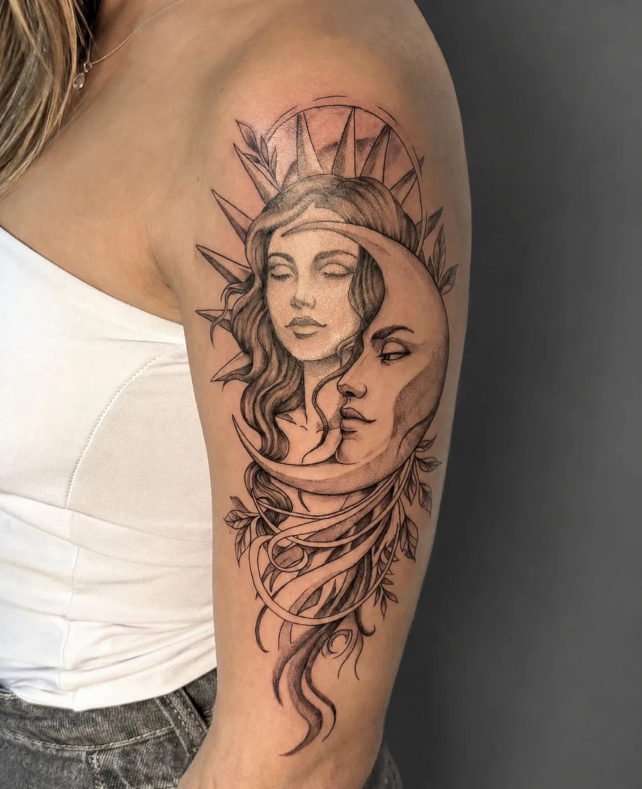
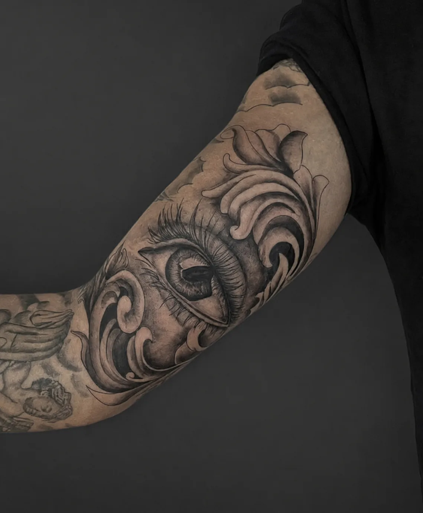
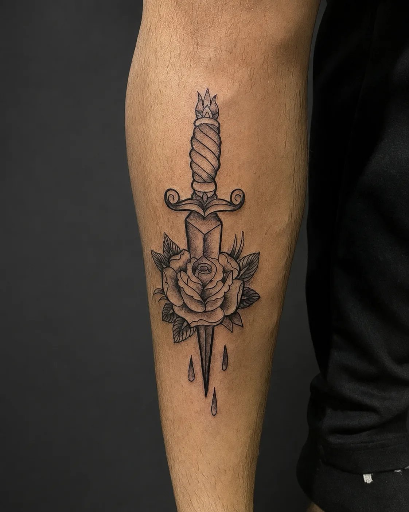
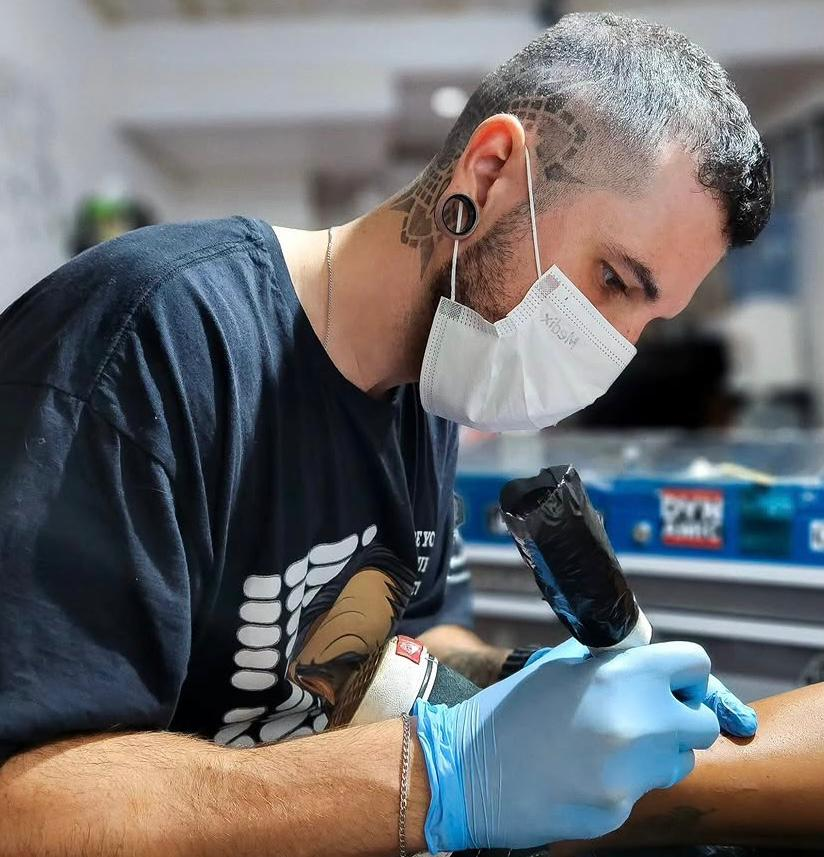
Pessôa Tattoo é sinônimo de dedicação, criatividade e excelência. Cada traço carrega propósito. Cada tatto conta uma história. Mais que tatuar, é transformar ideias em arte que permanece.
Você traz a sua ideia e conversamos sobre o projeto.
Desenvolvemos um desenho exclusivo para você.
Com técnica, segurança e qualidade, transformamos em arte.
Sua ideia, Minha arte, Pra Sempre!